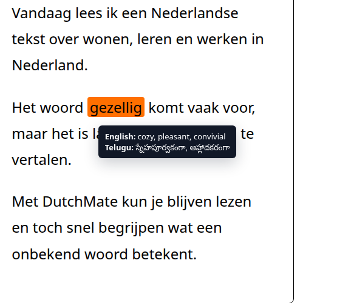
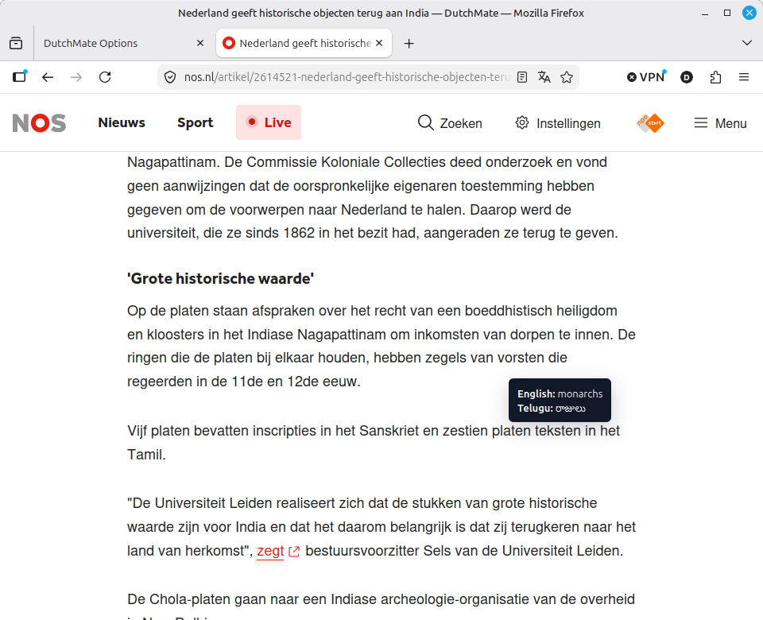
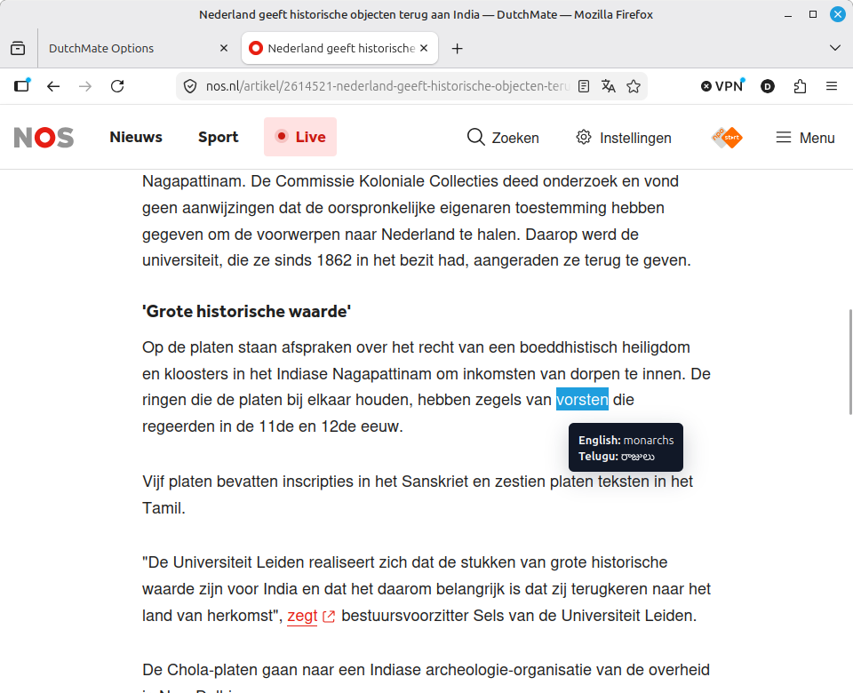
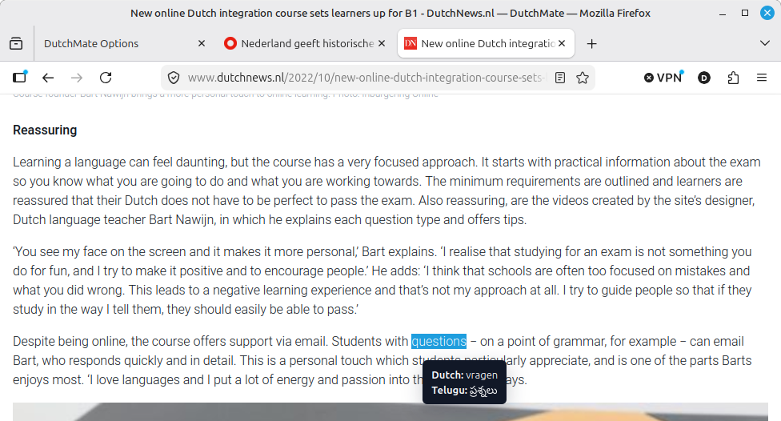
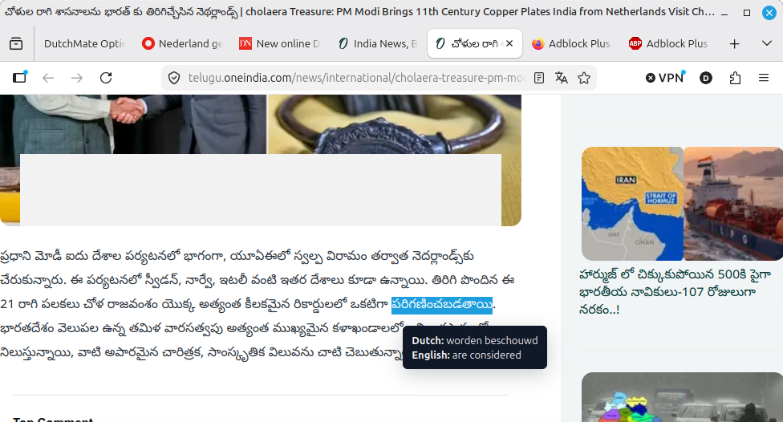
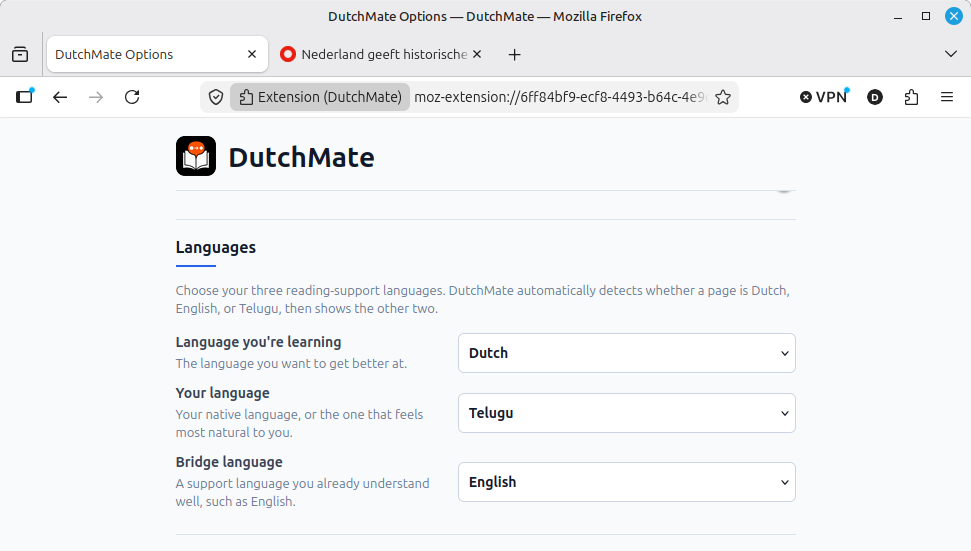
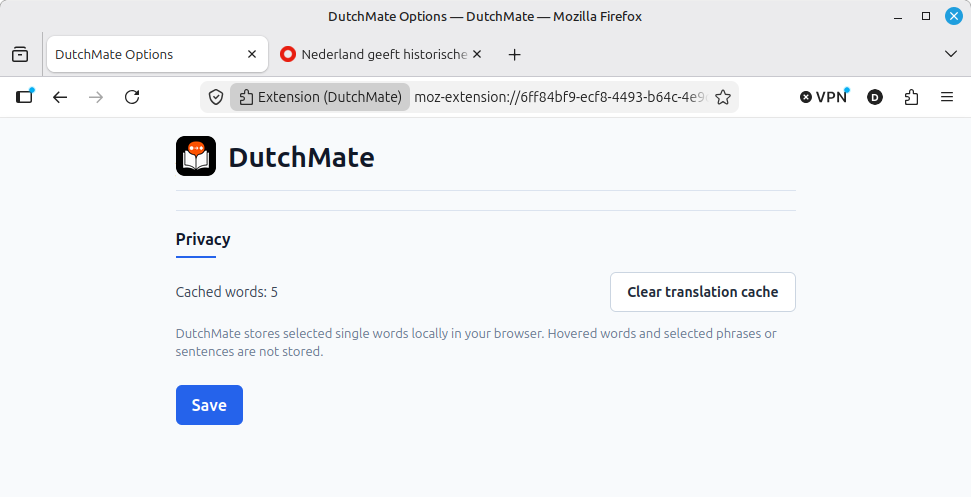

Hover a word
See both meanings.
Keep reading.
Firefox soft launch
Read with English and Telugu by your side across the Dutch, English, and Telugu learning triangle.
See both meanings.
Keep reading.
Save it locally.
Build and revise your Dutch vocabulary.

These are real extension screenshots from Firefox, showing hover lookup, selection-based translation, language switching, and local privacy controls.






DutchMate keeps language help beside the text, so Dutch can grow from what you already read online.
Set Dutch as the learning language, your mother tongue as support, and English as a bridge.
Hover a word or select short text on Dutch, English, or mother-tongue pages.
Selected single-word lookups stay local today. A local word list and spaced-repetition flashcards are the next learning layer.
DutchMate starts with fast lookup and local word storage, then grows toward spaced-repetition practice with your own words.
Use it on the Dutch, English, and mother-tongue pages you already visit.
Learn Dutch with English as a bridge and your own language, such as Telugu, beside it.
Selected single-word lookups are stored in your browser only, and you can clear them.
DutchMate sends text you ask to translate to its backend, but selected single-word storage stays in your browser.
Hover and selection decide what is translated.
Selected single-word lookups are cached locally for faster repeat learning.
Future flashcards are designed around words you choose while reading, not generic lists.
Public store links are being prepared. For now, Firefox is the first rollout path, and both the email link and website form feed the same review workflow.
Email for early accessUse direct email if that is faster for you, or use the minimal website form. Both go into the same review workflow for the Firefox soft launch.
Send early-access questions, bug notes, or reading-flow feedback to dutchmate.project@gmail.com.
Open the feedback form if you want a simple page-based way to send the same kind of note.